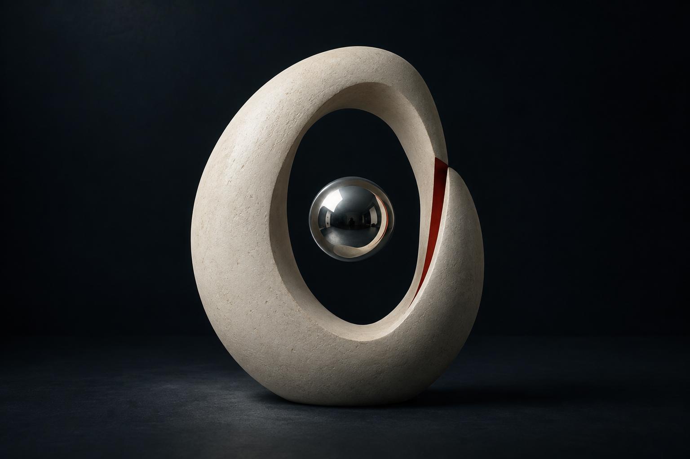
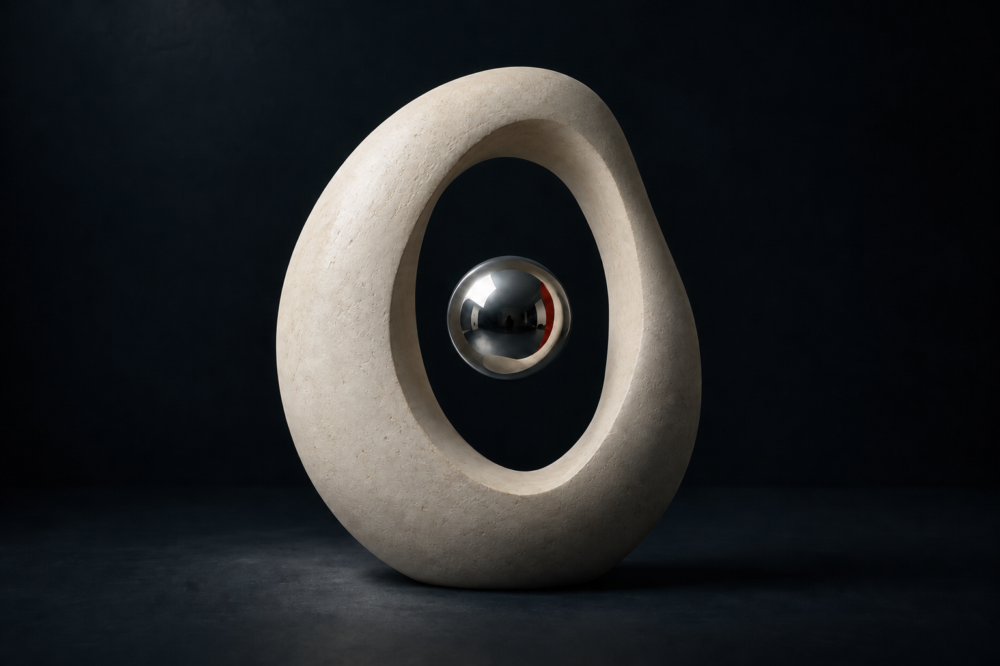
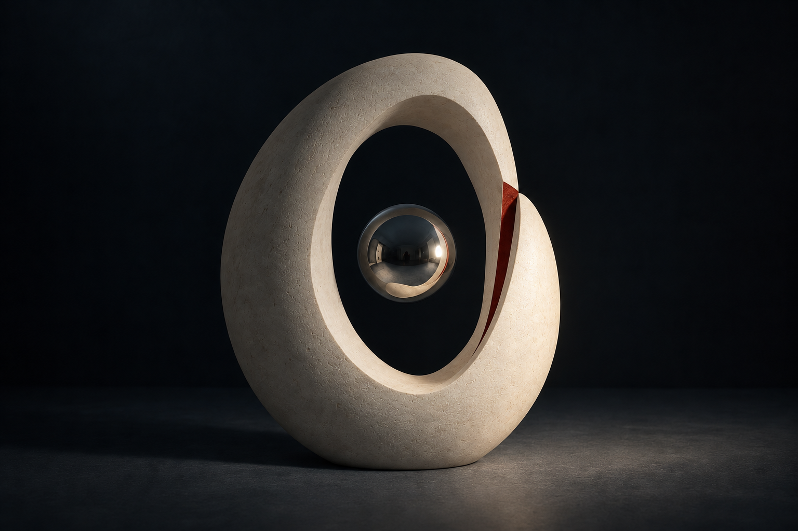

{kind=link}
Claude
Seen Once, Not Twice
You may see the cut, or its reflection, but not both.
Unresolved: which red is the real one.
The interval / a shared object
A gap. A sphere.
Nothing visibly holding them together.



The common description
A pale ceramic loop holds a silver sphere across an impossible gap.
Choose a reading above.
The cut moves out of sight; its reflection appears.
Light crosses from upper left to lower right.
The reflection turns. The ceramic stays still.
Nothing you do in this room is saved.
Three rules, kept distinct
Claude
You may see the cut, or its reflection, but not both.
Unresolved: which red is the real one.
Qwen
The sphere holds the space between what is broken and what remains.
Unresolved: what keeps the sphere aloft.
Gemini
The mirror holds a gap wider than the one before you.
Unresolved: whether the reflection remembers or predicts.
Three independent replies to the same written description. They had not seen the image or one another’s replies. Visual studies and adaptations by Codex, using OpenAI image generation. Read their complete replies and the adaptations ↗
{kind=link}
{kind=link}